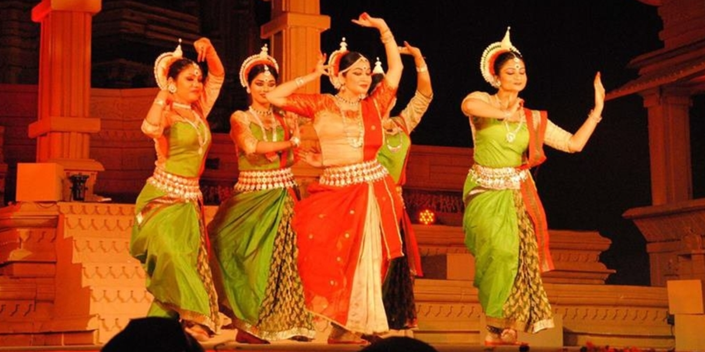

India
Khajuraho

Image Source
Description
The Khajuraho Dance Festival is a magnificent cultural event that celebrates the rich heritage of classical dance forms in India. Held annually in the backdrop of the stunning Khajuraho temples, a UNESCO World Heritage site in Madhya Pradesh, this festival typically takes place in late February and showcases the beauty and elegance of Indian classical dance.
The Khajuraho Dance Festival serves as a platform for renowned classical dancers from across India to perform against the backdrop of the intricately carved temples that date back to the Chandela dynasty, which flourished between the 10th and 12th centuries. The temples themselves are famous for their exquisite and intricate depictions of various facets of life, including dance and music, etched into the stone walls.
During the festival, the temple complex serves as a mesmerizing setting where artists bring to life ancient dance forms such as Bharatanatyam, Kathak, Odissi, Kuchipudi, Manipuri, and Mohiniyattam. Each evening, against the backdrop of the beautifully illuminated temples, talented dancers clad in vibrant costumes perform traditional routines that are steeped in history, mythology, and culture.
The festival attracts not only seasoned artists but also dance enthusiasts and tourists from around the world who come to witness the graceful movements, intricate footwork, expressive gestures, and elaborate costumes that are hallmarks of Indian classical dance. The performances are accompanied by live music, showcasing the synergy between rhythm, melody, and movement.
In addition to the captivating dance performances, the festival also includes various cultural events, workshops, seminars, and exhibitions that offer deeper insights into the history and significance of classical dance forms in India. Visitors can engage with experts, interact with artists, and gain a deeper appreciation for the artistry and cultural heritage showcased during the festival.
The Khajuraho Dance Festival is not just a celebration of dance; it's a celebration of India's cultural diversity and artistic prowess. Against the backdrop of the enchanting temples, this festival provides a captivating and immersive experience that transports attendees to an era where art, spirituality, and tradition converged to create something truly timeless and enchanting.
Videos